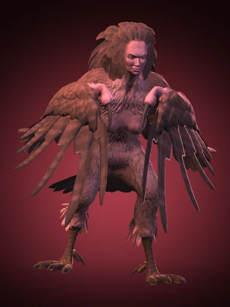
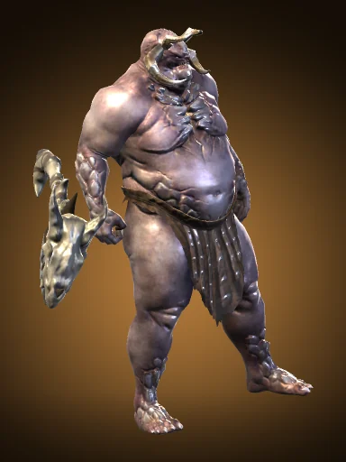

Commanders
Every commander, with its builds and talents.
A commander is a leader who fights on your board beside your units. There are 4. In the preparation phase of round 10 you are shown all 4 commanders. You pick the commander and one of its builds together. The commander stays with you for the rest of the match. It is always the same level as you, it does not take up a unit place, and it cannot be sold.
At player levels 4, 6, 8 and 10 the commander learns a talent, chosen from the options its build offers at that level.

Vey the Pactbinder
Support
A soft-spoken broker of infernal contracts. Vey never lifts a blade herself: her pact-servants fight for her while she mends her crew with her own blood.
- Thrall Binder: Marks the weakest enemy for the whole crew to break.
- Golem Caller: Calls a Pit Golem that stuns on arrival.

Brugg Ironjaw
Tank
A tusked tavern-keeper with fists like anvils. Brugg holds the front line, and the more bodies crowd around him, the harder he is to move.
- Barrel Roller: Rolls barrels that soften the enemy and quicken the crew.
- Innkeeper: Buys rounds that blunt the damage the crew takes.

Pip Quickfingers
Ranged
A small, furry and extremely light-fingered menace. Pip darts around the board poisoning enemies and lifting anything that is not nailed down.
- Pickpocket: Robs the enemy at the start of every fight.
- Brawler: Ropes every enemy into a stunning brawl.

Fizzwick Emberhorn
Ranged
A cackling pyromaniac with a horn full of black powder. Fizzwick sets everything he hits on fire and is happiest when the whole board is burning.
- Bombardier: Calls in bombs on random enemies.
- Firestarter: Sends the whole crew into a frenzy.
Comparison
A commander uses the numbers for your player level. Commanders arrive in round 10, so the lowest step only matters if your level is still low by then. Each commander's page has every step.
| Commander | Role | Attack range | Health up to level 5 | Health at level 10 | Attack damage at level 10 | Seconds between attacks | Armour at level 10 | Passive | Builds |
|---|---|---|---|---|---|---|---|---|---|
 Vey the Pactbinder | Support | 3 (ranged) | 1,500 | 3,375 | Does not attack | Does not attack | 4 | Pact Retinue | Thrall Binder, Golem Caller |
 Brugg Ironjaw | Tank | 1 (melee) | 1,900 | 4,100 | 190 to 220 | 2 | 16 | Crowd Brawler | Barrel Roller, Innkeeper |
 Pip Quickfingers Pip Quickfingers | Ranged | 2 (ranged) | 1,600 | 3,100 | 140 to 165 | 0.7 | 5 | Smoke and Mirrors | Pickpocket, Brawler |
 Fizzwick Emberhorn Fizzwick Emberhorn | Ranged | 3 (ranged) | 1,800 | 4,425 | 158 to 164 | 1.5 | 8 | Kindling | Bombardier, Firestarter |